-
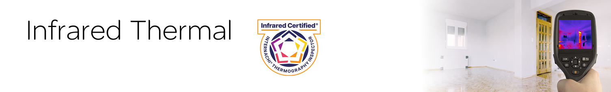
We include an infrared thermal inspection for free.
What is Infrared (IR) Thermal Technology?
Infrared thermal technology uses a special camera that shows temperature changes in objects by detecting their infrared radiation (IR), which is invisible to the human eye. For use in home inspections, the photos are shown as easy-to-see gradient colour changes, making it easier to detect anomalies, analyze their patterns, and document potential issues in the home.
X-rays, gamma rays, ultraviolet, visible, infrared, and radio waves are all forms of electromagnetic energy. As shown below by the sine wave, the main difference between them is the frequency of each. The higher the frequency, the more energy it has. The diagram below is called the electromagnetic spectrum. Infrared is on the “safer” side of the spectrum, so unlike gamma rays, with a much higher frequency, infrared is safe for people.
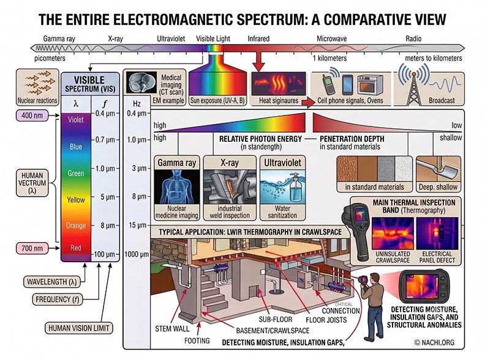
What we see is compared to home inspectors who don't use IR thermal cameras.
Sample Photo 1:
Here is a photo of an exterior vent for the dryer. During winter, we can see cold air leaking into the laundry room via an uninsulated area surrounding the duct exit. The laundry room in the winter is very cold, so we can identify areas that should be fixed to solve this problem.
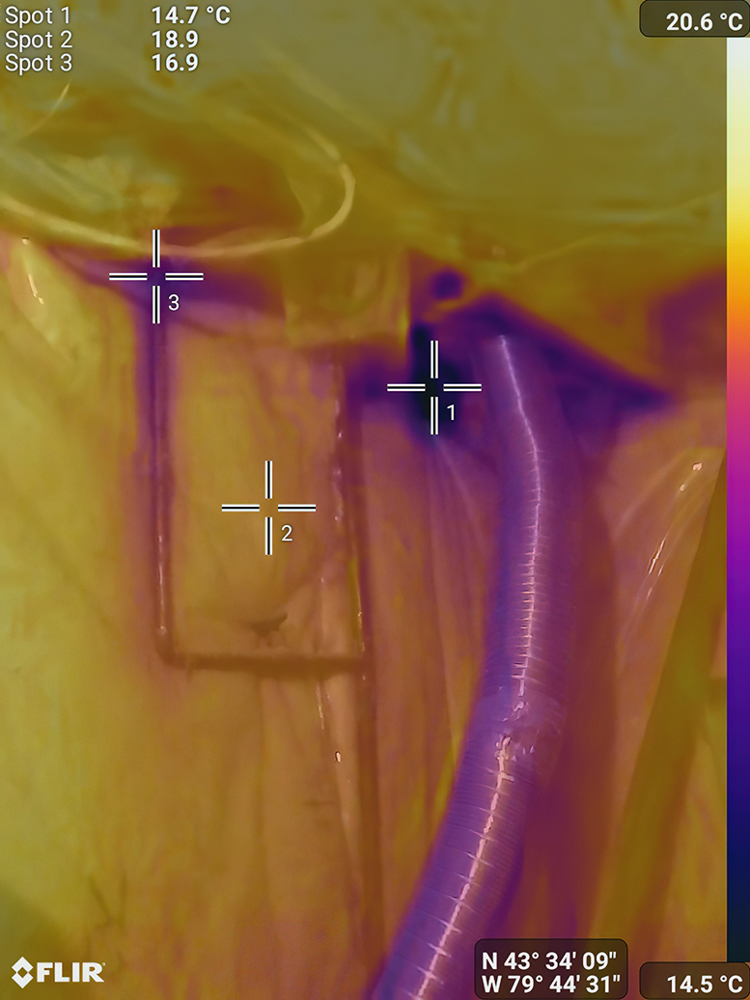
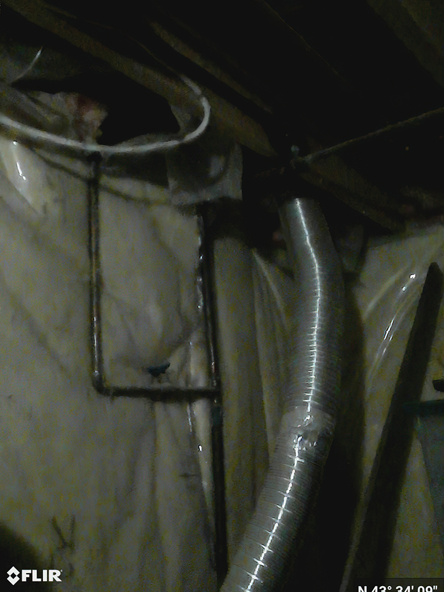
Sample Photo 2:
Electrical panel. We can reveal any hotspot in the panel, overheating of wires, or potential arcing. For electrical IR thermal inspections, we note actual temperatures to seek potential overheating of wires, since we know that wires have temperature limits for safety.
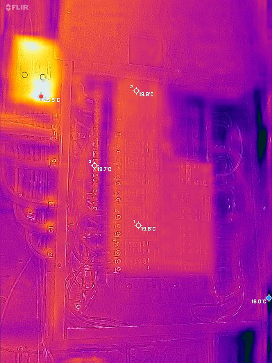
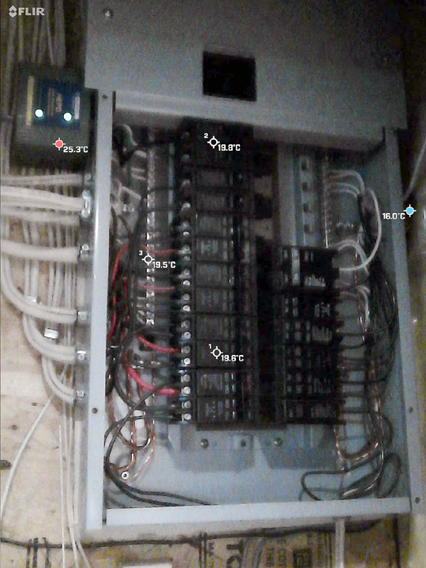
Sample Photo 3:
These photos (taken in winter) are at the front of a house with cold sections around the front door. We can see the extent of cold air intrusion around exterior doors. We also find an anomaly in the wall area. Is that from the lack of insulation, or is it a wet area? We cannot know for sure from the IR thermal photos themselves.
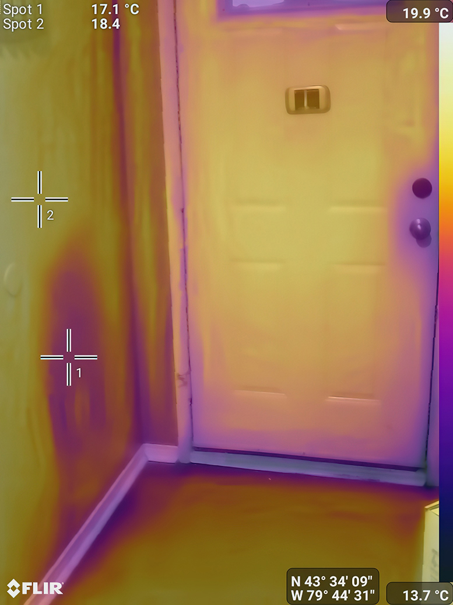
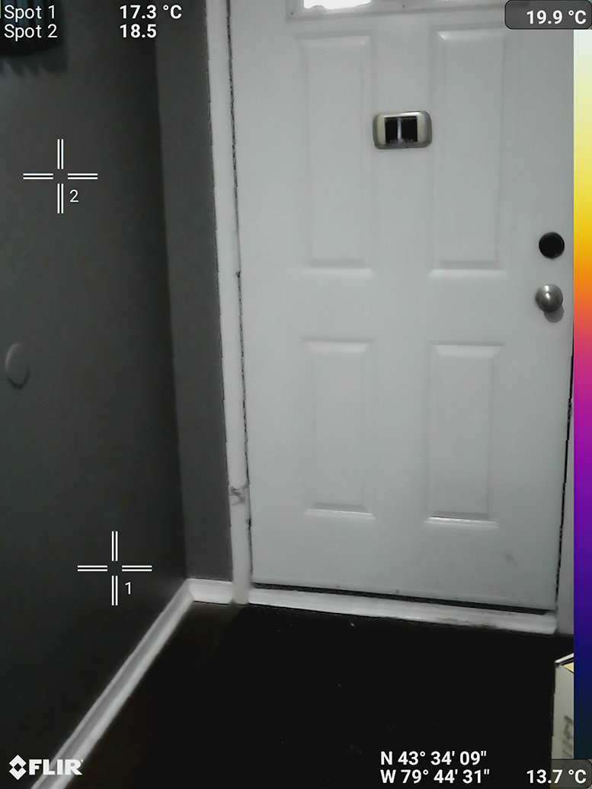
Any suspected anomaly that is potentially a moisture issue is always confirmed by a moisture meter. Here, we test the area with a pinless moisture meter and see elevated levels of moisture in the area, and we have our answer.

-
Why is this important in a home inspection?
Energy Efficiency:
An IR thermal inspection can reveal things you cannot see, such as heat loss or cold air intrusion. It can show a lack of a seal around windows/doors or a lack of insulation in the wall cavity. Thus, it can reveal potential energy efficiency problems in a home. In HVAC, it can show possible leaks in ducts, vents, or pipes.
Moisture:
Water penetration can have destructive effects on a home (from structure to mould), so finding moisture issues behind your walls, ceilings, or floors can help stop issues before they become a more expensive concern. The basement, attic, HVAC, bathrooms, and laundry area are all areas where an IR inspection can help reveal issues.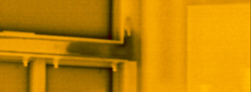
Electrical:
IR thermal inspections on electrical systems can find possible issues of wire overheating, arcing, or loose connections before they start a fire. Here, we use temperature changes (called Delta T) and actual temperature readings to determine issues.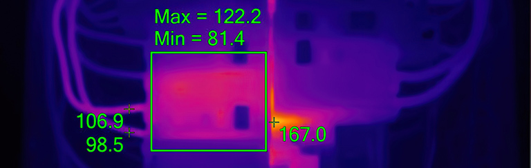
-
Ready for your first inspection?
Book CoachingCall us today at 416-275-5808 or book your inspection online.
-
IR Thermal Frequency Asked Questions
-
IR Thermal inspections can help find potential problems in the house:
Energy Efficiency
- Finding heat or cold loss through walls, ceilings, floors, windows, and doors.
- Finding missing insulation in walls and ceilings.
- Finding the source of damaged radiant heating systems.
- Finding leaks in the venting of HVAC systems.
Moisture Problems
- Finding general plumbing leaks in basins and showers.
- Finding roof leaks.
- Finding toilet leaks.
Electrical Problems
- Finding overheating circuit breakers and wires that can lead to fires.
- Finding overheating electrical equipment.
- Finding potential arcing in electrical panels.
Others:
- Finding pests and animals hidden in the house.
Technically no. IR cameras do not provide us with x-ray vision. For example, even though IR thermal photos appear to show studs behind drywall, you are not seeing the actual studs. What you are seeing is a representation of the stud from differences in temperature the camera is reading from the drywall and assigning it a colour. Since fiberglass insulation is a much better insulator than wood, the studs will appear cooler in the IR photos, and thus will stand out.
IR thermal inspections are not 100% perfect. Home inspectors interpret IR images as best they can, but the science is not perfect. They are not x-rayed images, the images represent temperature differences on the SURFACE of an object, and they can be affected by outside influences. They provide evidence that a problem could be present and should be confirmed by other means such as visually or using a moisture meter. Furthermore, they cannot predict future conditions in a house.
IR images can be influenced by external factors. The IR photo below shows how the effect of material can distort an IR image. The glass material has higher reflective properties than drywall, so you can see a hot signature in the photo, which is a person's heat being reflected.
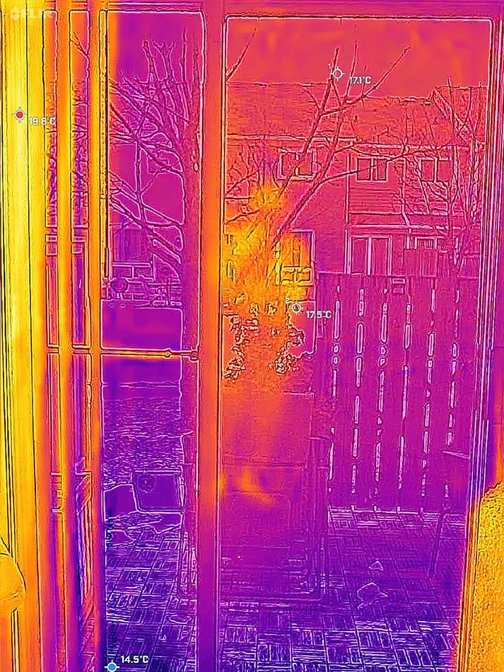
No. IR cameras are perfectly safe to use. Every object emits infrared radiation, and the IR cameras simply translate this information into temperature readings and display it as a coloured gradient.
One of the most important aspects of IR thermal inspections is emissivity. The effectiveness of different materials to radiate heat. The higher the emissivity rating, the better we can see it on an IR thermal camera. Using a scale of 1. Water is at .95, concrete at .94, and steel at .66 are some examples. What does that mean? Water and concrete materials will provide more accurate information to the inspector, while materials such as steel, and glass can be more influenced by outside factors, so the information from them is less trustworthy.

Source: InterNACHIIR thermal inspection can help find moisture problems from plumbing leaks, or penetrations such as skylights from around the house. Water has a high emissivity rating and will be cooler in temperature when evaporating, so moisture signatures can show up better on IR thermal photos. Visual evidence such as stains, and discoloration, combined with IR thermal images and moisture meter testing will provide good evidence of moisture presence.
IR cameras are very good at displaying heat loss around doors and windows. Any heat or cold leaks around a door or window will show up as a bright yellow or dark area with fading streaks. Missing insulation can be detected, especially in the winter or summer when the temperature difference is higher because parts of the drywall on the ceiling or walls will be noticeably cooler or hotter.
What if you suspect you have pests in the home, but can't find them? Can IR thermal help? Any animal from rats to raccoons will give off a more visible “heat signature” compared to the surrounding area, so IR can detect pests in areas such as the attic.
Delta T is the difference in temperature between two objects. Why is this important in IR inspections? If there is no Delta T, then the IR thermal camera will have a difficult time picking up any anomalies because everything will look the same. Winter and summer is the optimal time of the year for IR thermal inspections because it is the time of the greatest temperature difference, outside and inside a house. A greater Delta T means the better we can see anomalies. Sometimes, the inspector may have to increase or decrease the interior house temperature in order to create a larger Delta T.
Most IR thermal inspections do not depend on the actual temperature of the materials we see. Why? We want to see differences or anomalies in temperature, so the real temperature is not as important for most of the inspection.
There are some instances where real temperature taking and observing are used during the inspection. This is the case when inspecting an electrical panel. Since we know that certain types of electrical wire have temperature limits such as 90 degrees C, if we observe an IR image showing wires that exceed that limit, we can conclude that there could be a problem with the overheating of the wire.
The free IR thermal inspection is optional. Just indicate that you don't need an IR thermal inspection.
No. Not all home inspectors provide this service. The companies that do, may charge the client extra for the service. IR thermal inspections are considered beyond the standard of practice. An IR thermal inspection is free to all Home Inspector M.D. Inc. clients.
We will provide an internal IR thermal home inspection after the standard inspection, which can take about 30 minutes.
No. Many home inspectors companies charge for an IR thermal inspection as a separate fee of several hundred dollars. Make sure you ask them if the base fee includes an IR thermal inspection. At Home Inspector M.D. Inc. we believe it's important enough to have an IR thermal inspection included as standard and free.
I will always say appears in images because IR images only provide clues to issues. An anomaly in an IR image tells me there may be an issue, but it must be confirmed by other means, such as a moisture meter or visual confirmation. Remember, an IR camera does not show moisture in its photo. It shows a temperature difference that may be an indicator of moisture. It does not see through walls, but it may indicate missing insulation. Furthermore, it is possible that there could be false positives.
This sounds like a broken record, but IR cameras only see temperature differences on the surface of materials. Many times mould is dry and behind drywall. At this point mould can be dangerous, but because it is dry no IR camera will be able to detect mould in this condition. If drywall is wet, then it may indicate the possibility of mould that should be confirmed visually or via a moisture meter.